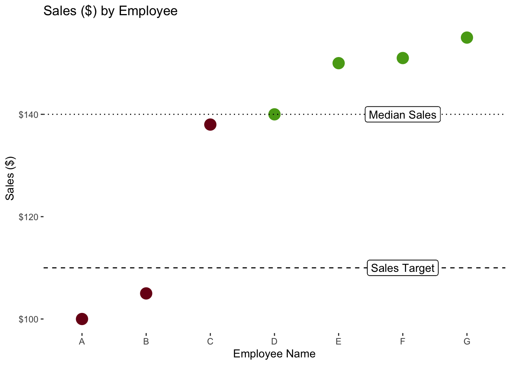
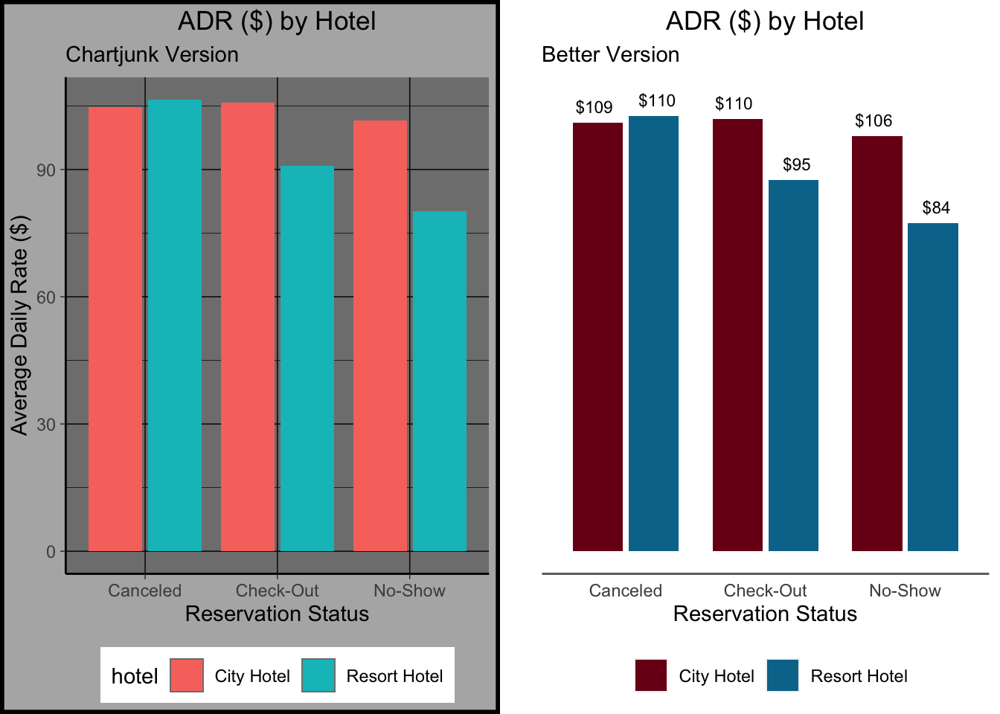

5 Design Fundamentals
5.1 Visual Perception Facts
We do not attend to everything we see.
Our eyes are drawn to familiar patterns.
Memory plays an important role in human cognition, but working memory is limited.
5.2 Color Theory
Color plays a critical role in how we view and perceive the world.
Contrast is [DEFINITION] and is the most important consideration in data visualizations.
5.2.1 Color and Accessibility
It’s important to recognize that not everyone perceives color the same way.

5.3 Preattentive Visual Attributes
5.4 Tufte’s Data Visualization Principles
Edward Tufte’s The Visual Display of Quantitative Information is classic book on data visualization.
5.4.1 15 Second Test
Visualizations should be able to more or less stand on their own (perhaps with some footnotes). I shouldn’t need to read the report to understand what a visualization is showing me. And ideally, it shouldn’t take very long at all for me to understand what a graph is showing me.
Let’s make a quick visualization showing the number of completed stays, by hotel, over time.

You can see it, right? We see the annual pattern of bookings by two hotels over two years or so. Which hotel seems to have seasonality in demand?
5.5 Fixing Cluttered Visualizations
Sometimes, it feels like there’s no way to keep a visualization clean and intuitive. “But there’s too much I need to include, and I can’t drop any of it!” Here are a couple of strategies to try.
5.5.1 Facet to make Multiple Visualizations
Let’s look at the trend in sales of meal packages over time by hotel. Meals are high margin, so we want more guests to buy them. By looking at the percentage of guests getting meals, we can assess how well our agents are upselling.
Meal Service Classifications
- SC: No Meals Included
- BB: “Bed and Breakfast” (1 Meal per Day included in rate)
- HB: “Half Board” (2 Meals per Day included in rate)

What’s wrong with this figure? It’s cluttered, and hard to follow which line is which. There’s also no clear grouping of the lines by hotel. I could switch the colors, or add some kind of dashes, but then I’m asking people to track two things (color and pattern) instead of doing what I want them to do…look for patterns in the data.
Let’s fix this by faceting, splitting the graph into smaller separate graphs, broken up by some other variable. In ggplot, we add a facet with a facet_wrap() and facet_grid() functions. I usually use facet_grid() because it gives more control and lets you facet by more than one variable, but you can use whichever makes the most sense.

Now we can see very clearly that there’s been a recent increase in the percentage of bookings with HB (“half-board”) service…the most profitable class. Looks like recent upselling efforts are working and the sales staff should be commended.
5.5.2 Switch to a Table
It may seem odd that the recommendation in a class about visualizations is, “Don’t make this a visualization.” Going back to our hotel_bookings.csv data, suppose we are having a meeting to discuss the average daily rate quoted to guests from different countries by the meal service (meal) they request. Just $1 makes a big difference times thousands of guests a year, so we want exact numbers to discuss in the meeting.